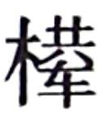

史记卷二
夏本纪第二
夏禹 ，名曰文命 。禹 之父曰鲧 ，鲧 之父曰帝颛顼 ，颛顼 之父曰昌意 ，昌意 之父曰黄帝 。禹 者，黄帝 之玄孙而帝颛顼 之孙也。禹 之曾大父昌意 及父鲧 皆不得在帝位，为人臣。
当帝尧 之时，鸿水滔天，浩浩怀山襄陵，下民其忧。尧 求能治水者，群臣四岳皆曰鲧 可。尧 曰：“鲧 为人负命毁族，不可。”四岳曰：“等之未有贤于鲧 者，愿帝试之。”于是尧 听四岳，用鲧 治水。九年而水不息，功用不成。于是帝尧 乃求人，更得舜 。舜 登用，摄行天子之政，巡狩。行视鲧 之治水无状，乃殛鲧 于羽山 以死。天下皆以舜 之诛为是。于是舜 举鲧 子禹 ，而使续鲧 之业。
尧 崩，帝舜 问四岳曰：“有能成美尧 之事者使居官？”皆曰：“伯禹 为司空，可成美尧 之功。”舜 曰：“嗟，然！”命禹 ：“女平水土，维是勉之。”禹 拜稽首，让于契 、后稷 、皋陶 。舜 曰：“女其往视尔事矣。”
禹 为人敏给克勤；其德不违，其仁可亲，其言可信；声为律，身为度，称以出；亹亹穆穆，为纲为纪。
禹 乃遂与益 、后稷 奉帝命，命诸侯百姓兴人徒以傅土，行山表木，定高山大川。禹 伤先人父鲧 功之不成受诛，乃劳身焦思，居外十三年，过家门不敢入。薄衣食，致孝于鬼神。卑宫室，致费于沟淢。陆行乘车，水行乘船，泥行乘橇，山行乘 。左准绳，右规矩，载四时，以开九州，通九道，陂九泽，度九山。令益 予众庶稻，可种卑湿。命后稷 予众庶难得之食。食少，调有馀相给，以均诸侯。禹 乃行相地宜所有以贡，及山川之便利。
禹 行自冀州 始。冀州 ：既载壶口 ，治梁 及岐 。既修太原 ，至于岳 阳。覃怀 致功，至于衡漳 。其土白壤。赋上上错，田中中。常 、卫 既从，大陆 既为。鸟夷 皮服。夹右碣石 ，入于河。
济 、河 维沇州 ：九河既道，雷夏 既泽，雍 、沮 会同，桑土既蚕，于是民得下丘居土。其土黑坟，草繇木条。田中下，赋贞，作十有三年乃同。其贡 漆丝，其篚织文。浮于济 、漯 ，通于河 。
海岱
维青州
：堣夷
既略，潍
、淄
其道。其土白坟，海滨广潟，厥田斥卤。田上下，赋中上。厥贡盐 ，海物维错，岱
畎丝、枲、铅、松、怪石，莱夷
为牧，其篚酓丝。浮于汶
，通于济
。
，海物维错，岱
畎丝、枲、铅、松、怪石，莱夷
为牧，其篚酓丝。浮于汶
，通于济
。
海岱 及淮 维徐州 ：淮 、沂 其治，蒙 、羽 其蓺。大野 既都，东原 底平。其土赤埴坟，草木渐包。其田上中，赋中中。贡维土五色，羽 畎夏狄，峄 阳孤桐，泗 滨浮磬，淮夷 玼珠暨鱼，其篚玄纤缟。浮于淮 、泗 ，通于河 。
淮 海维扬州 ：彭蠡 既都，阳鸟所居。三江 既入，震泽 致定。竹箭既布。其草惟夭，其木惟乔，其土涂泥。田下下，赋下上上杂。贡金三品，瑶、琨、竹箭，齿、革、羽、旄，岛夷 卉服，其篚织贝，其包橘、柚锡贡。均江 海，通淮 、泗 。
荆
及衡阳
维荆州
：江
、汉
朝宗于海。九江
甚中，沱
、涔
已道，云土
、梦
为治。其土涂泥。田下中，赋上下。贡羽、旄、齿、革，金三品，杶、榦、栝、柏，砺、砥、砮、丹，维箘簬、楛，三国致贡其名，包匦菁茅，其篚玄 玑组，九江
入赐大龟。浮于江
、沱
、涔
、汉
，逾于雒
，至于南河
。
玑组，九江
入赐大龟。浮于江
、沱
、涔
、汉
，逾于雒
，至于南河
。
荆河
惟豫州
：伊
、雒
、瀍
、涧
既入于河
，荥播
既都，道荷泽
，被明都
。其土壤，下土坟垆。田中上，赋杂上中。贡漆、丝、
、纻，其篚纤絮，锡贡磬错。浮于雒
，达于河
。
华 阳黑水 惟梁州 ：汶 、嶓 既蓺，沱 、涔 既道，蔡 、蒙 旅平，和夷 厎绩。其土青骊。田下上，赋下中三错。贡璆、铁、银、镂、砮、磬，熊、罴、狐、狸、织皮。西倾 因桓 是来，浮于潜 ，逾于沔 ，入于渭 ，乱于河 。
黑水 西河 惟雍州 ：弱水 既西，泾 属渭汭 。漆 、沮 既从，沣水 所同。荆 、岐 已旅，终南 、敦物 至于鸟鼠 。原隰厎绩，至于都野 。三危 既度，三苗 大序。其土黄壤。田上上，赋中下。贡璆、琳、琅玕。浮于积石 ，至于龙门西河 ，会于渭汭 。织皮昆仑 、析支 、渠搜 ，西戎 即序。
道九山：汧 及岐 至于荆山 ，逾于河 ；壶口 、雷首 至于太岳 ；砥柱 、析城 至于王屋 ；太行 、常山 至于碣石 ，入于海；西倾 、朱圉 、鸟鼠 至于太华 ；熊耳 、外方 、桐柏 至于负尾 ；道嶓冢 ，至于荆山 ；内方 至于大别 ；汶山 之阳至衡山 ，过九江，至于敷浅原 。
道九川：弱水
至于合黎
，馀波入于流沙
。道黑水
，至于三危
，入于南海
。道河积石
，至于龙门
，南至华阴
，东至砥柱
，又东至于盟津
，东过雒汭
，至于大邳
，北过降水
，至于大陆
，北播为九河
，同为逆河
，入于海。嶓冢
道 ，东流为汉
，又东为苍浪
之水，过三澨
，入于大别
，南入于江
，东汇泽为彭
蠡
，东为北江
，入于海。汶山
道江
，东别为沱
，又东至于醴
，过九江
，至于东陵
，东迆北会于汇，东为中江
，入于海。道沇水
，东为济
，入于河
，泆为荥
，东出陶丘
北，又东至于荷
，又东北会于汶
，又东北入于海。道淮
自桐柏
，东会于泗
、沂
，东入于海。道渭
自鸟鼠同穴
，东会于沣
，又东北至于泾
，东过漆
、沮，入于河
。道雒
自熊耳
，东北会于涧
、瀍
，又东会于伊
，东北入于河
。
，东流为汉
，又东为苍浪
之水，过三澨
，入于大别
，南入于江
，东汇泽为彭
蠡
，东为北江
，入于海。汶山
道江
，东别为沱
，又东至于醴
，过九江
，至于东陵
，东迆北会于汇，东为中江
，入于海。道沇水
，东为济
，入于河
，泆为荥
，东出陶丘
北，又东至于荷
，又东北会于汶
，又东北入于海。道淮
自桐柏
，东会于泗
、沂
，东入于海。道渭
自鸟鼠同穴
，东会于沣
，又东北至于泾
，东过漆
、沮，入于河
。道雒
自熊耳
，东北会于涧
、瀍
，又东会于伊
，东北入于河
。
于是九州攸同，四奥既居，九山刊旅，九川涤原，九泽既陂，四海会同。六府甚修，众土交正，致慎财赋，咸则三壤成赋。中国赐土姓：“祗台德先，不距朕行。”
令天子之国以外五百里甸服：百里赋纳总，二百里纳铚，三百里纳秸服，四百里粟，五百里米。甸服外五百里侯服：百里采，二百里任国，三百里诸侯。侯服外五百里绥服：三百里揆文教，二百里奋武卫。绥服外五百里要服：三百里夷，二百里蔡。要服外五百里荒服：三百里蛮，二百里流。
东渐于海，西被于流沙
，朔、南暨：声教讫于四海。于是帝锡禹
玄圭，以告成功于天下。天下于是太平治。
皋陶
作士以理民。帝舜
朝，禹
、伯夷
、皋陶
相与语帝前。皋陶
述其谋曰：“信其道德，谋明辅和。”禹
曰：“然，如何？”皋陶
曰：“於！慎其身修，思长，敦序九族，众明高翼，近可远在已。”禹
拜美言，曰：“然。”皋陶
曰：“於！在知人，在安民。”禹
曰：“吁！皆若是，惟帝其难之。知人则智，能官人；能安民则惠，黎民怀之。能知能惠，何忧乎 兜
，何迁乎有苗
，何畏乎巧言善色佞人？”皋陶
曰：“然，於！亦行有九德，亦言其有德。”乃言曰：“始事事，宽而栗，柔而立，愿而共，治而敬，扰而毅，直而温，简而廉，刚而实，强而义，章其有常，吉哉。日宣三德，蚤夜翊明有家。日严振敬六德，亮采有国。翕受普施，九德咸事，俊乂在官，百吏肃谨。毋教邪淫奇谋。非其人居其官，是谓乱天事。天讨有罪，五刑五用哉。吾言厎可行乎？”禹
曰：“女言致可绩行。”皋陶
曰：“余未有知，思赞道哉。”
兜
，何迁乎有苗
，何畏乎巧言善色佞人？”皋陶
曰：“然，於！亦行有九德，亦言其有德。”乃言曰：“始事事，宽而栗，柔而立，愿而共，治而敬，扰而毅，直而温，简而廉，刚而实，强而义，章其有常，吉哉。日宣三德，蚤夜翊明有家。日严振敬六德，亮采有国。翕受普施，九德咸事，俊乂在官，百吏肃谨。毋教邪淫奇谋。非其人居其官，是谓乱天事。天讨有罪，五刑五用哉。吾言厎可行乎？”禹
曰：“女言致可绩行。”皋陶
曰：“余未有知，思赞道哉。”
帝舜 谓禹 曰：“女亦昌言。”禹 拜曰：“於，予何言！予思日孳孳。”皋陶 难禹 曰：“何谓孳孳？”禹 曰：“鸿水滔天，浩浩怀山襄陵，下民皆服于水。予陆行乘车，水行乘舟，泥行乘橇，山行乘 ，行山刊木。与益 予众庶稻鲜食。以决九川致四海，浚畎浍致之川。与稷 予众庶难得之食。食少，调有馀补不足，徙居。众民乃定，万国为治。”皋陶 曰：“然，此而美也。”
禹 曰：“於，帝！慎乃在位，安尔止。辅德，天下大应。清意以昭待上帝命，天其重命用休。”帝曰：“吁，臣哉，臣哉！臣作朕股肱耳目。予欲左 右有民，女辅之。余欲观古人之象，日月星辰，作文绣服色，女明之。予欲闻六律五声八音，来始滑，以出入五言，女听。予即辟，女匡拂予。女无面谀，退而谤予。敬四辅臣。诸众谗嬖臣，君德诚施皆清矣。”禹 曰：“然。帝即不时，布同善恶则毋功。”
帝曰：“毋若丹朱 傲，维慢游是好，毋水行舟，朋淫于家，用绝其世。予不能顺是。”禹 曰：“予娶涂山 ，辛壬癸甲，生启 予不子，以故能成水土功。辅成五服，至于五千里，州十二师，外薄四海，咸建五长，各道有功。苗 顽不即功，帝其念哉。”帝曰：“道吾德，乃女功序之也。”
皋陶 于是敬禹 之德，令民皆则禹 。不如言，刑从之。舜 德大明。
于是夔
行乐，祖考至，群后相让，鸟兽翔舞，箫韶
九成，凤皇来仪，百兽率舞，百官信谐。帝用此作歌曰：“陟天之命，维时维几。”乃歌曰：“股肱喜哉，元首起哉，百工熙哉！”皋陶
拜手稽首扬言曰：“念哉，率为兴事，慎乃宪，敬哉！”乃更为歌曰：“元首明哉，股肱良哉，庶事康哉！”又歌曰：“元首丛脞哉，股肱惰哉，万事堕哉！”帝拜曰：“然，往钦哉！”于是天下皆宗禹
之明度数声乐，为山川神主。
帝舜 荐禹 于天，为嗣。十七年而帝舜 崩。三年丧毕，禹 辞辟舜 之子商均 于阳城 。天下诸侯皆去商均 而朝禹 。禹 于是遂即天子位，南面朝天下，国号曰夏后 ，姓姒氏 。
帝禹 立而举皋陶 荐之，且授政焉，而皋陶 卒。封皋陶 之后于英 、六 ，或在许 。而后举益 ，任之政。
十年，帝禹
东巡狩，至于会稽
而崩。以天下授益
。三年之丧毕，益
让帝禹
之子启
，而辟居箕山
之阳。禹
子启贤，天下属意焉。及禹
崩，虽授益
，益
之佐禹
日浅，天下未洽。故诸侯皆去益
而朝启
，曰“吾君帝禹
之子也”。于是启
遂即天子之位，是为夏后帝启
。
夏后帝启 ，禹 之子，其母涂山氏 之女也。
有扈氏 不服，启伐之，大战于甘 。将战，作甘誓 ，乃召六卿申之。启 曰：“嗟！六事之人，予誓告女：有扈氏 威侮五行，怠弃三正，天用剿绝其命。今予维共行天之罚。左不攻于左，右不攻于右，女不共命。御非其马之政，女不共命。用命，赏于祖；不用命，僇于社，予则帑僇女。”遂灭有扈氏 。天下咸朝。
夏后帝启 崩，子帝太康 立。帝太康 失国，昆弟五人，须于洛汭 ，作五子 之歌 。
太康 崩，弟中康 立，是为帝中康 。帝中康 时，羲 、和 湎淫，废时乱日。胤 往征之，作胤征 。
中康 崩，子帝相 立。帝相 崩，子帝少康 立。帝少康 崩，子帝予 立。帝予 崩，子帝槐 立。帝槐 崩，子帝芒 立。帝芒 崩，子帝泄 立。帝泄 崩，子帝不降 立。帝不降 崩，弟帝扃 立。帝扃 崩，子帝廑 立。帝廑 崩，立帝不降 之子孔甲 ，是为帝孔甲 。帝孔甲 立，好方鬼神，事淫乱。夏后氏 德衰，诸侯畔之。天降龙二，有雌雄，孔甲 不能食，未得豢龙氏。陶唐 既衰，其后有刘累 ，学扰龙于豢龙氏，以事孔甲 。孔甲 赐之姓曰御龙氏 ，受豕韦 之后。龙一雌死，以食夏后 。夏后 使求，惧而迁去。
孔甲
崩，子帝皋
立。帝皋
崩，子帝发
立。帝发
崩，子帝履癸
立，是为桀
。帝桀
之时，自孔甲
以来而诸侯多畔夏
，桀
不务德而武伤百姓，百姓弗堪。乃召汤
而囚之夏台
，已而释之。汤
修德，诸侯皆归汤
，汤
遂率兵以伐夏桀
。桀
走鸣条
，遂放而死。桀
谓人曰：“吾悔不遂杀汤
于夏台
，使至此。”汤
乃践天子位，代夏
朝天下。汤
封夏
之后，至周
封于杞
也。